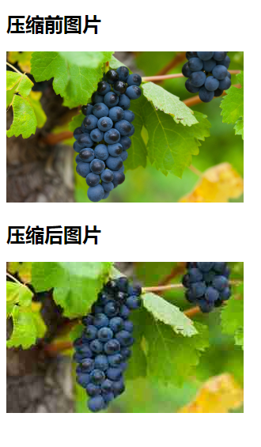
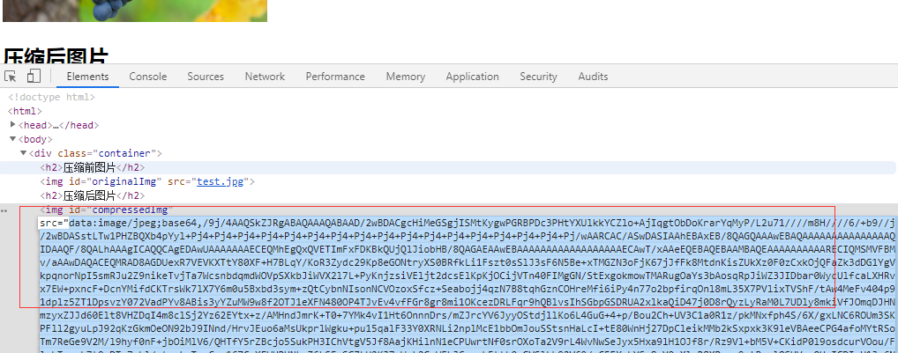

讲干货，不啰嗦，当涉及对图片有质量压缩要求的时候，可以使用Canvas实现图片压缩。
步骤：
1.获取img元素，既要压缩的图片
2.创建canvas对象
3.使用canvas的drawImage方法绘制图片
4.通过canvas toDataURl方法获取图像base64编码，设置quality参数，实现压缩
参考示例：
<!DOCTYPE html>
<html>
<head>
<meta charset="UTF-8">
<title>Canvas图片压缩测试</title>
<script src="https://code.jquery.com/jquery-3.3.1.min.js"></script>
</head>
<body>
<div class="container">
<h2>压缩前图片</h2>
<img id="originalImg" src="test.jpg">
<h2>压缩后图片</h2>
<img id="compressedImg" src="">
</div>
<script>
$(document).ready(function(){
compressImg(300,0.2)
});
function compressImg(width,quality ) {
// 图片压缩方法，接受2个参数
// width：压缩后图片宽度,高度按比例计算
// quality：压缩比例参数，范围0-1
var img=$("#originalImg")[0];//获取图像元素
var height=width/img.width*img.height;
//生成canvas
var canvas = document.createElement('canvas');
var ctx = canvas.getContext('2d');
canvas.width = width;
canvas.height = height;
//通过canvas drawImage方法绘制图片
ctx.drawImage(img,0,0,width,height);//后四个为位置参数，左上角x,y坐标，右下角x,y坐标
//通过canvas toDataURl方法获取图像base64编码，quality为压缩质量参数，值越小图像越模糊
var base64 = canvas.toDataURL('image/jpeg', quality);
//测试展示
$("#compressedImg").attr("src",base64)
//获取到base64后可做进一步处理，如传到后端并储存
}
</script>
<style>
#originalImg{
width: 300px;
}
</style>
</body>
</html>
压缩前后图片对比：

生成的base64码：

能力有限，水平一般，错误之处，欢迎指正，感谢关注和评论！